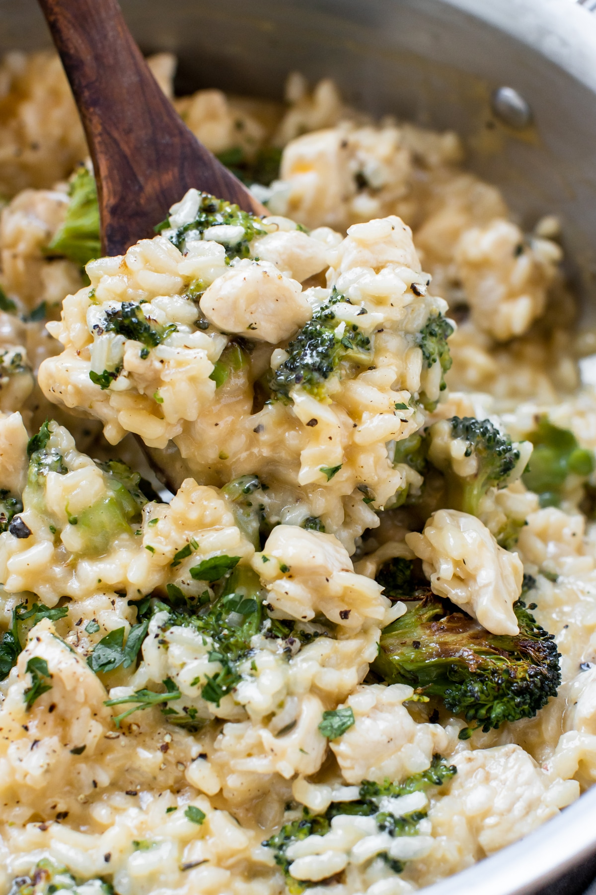

Orzo Risotto

Description
A delightful risotto with broccoli and chicken. Grate with cheese and chopped parsley for extra flavor!
Ingredients
- Broccoli
- Arborio rice
- Chicken
- Cheddar cheese
Steps
- Roast the broccoli for 12-15 minutes at 425°F.
- Warm the broth in a medium sized saucepan over medium heat and keep warm.
- Cook the chicken until is no longer pink, place chicken on a paper towel lined plate and set aside.
- Sweat onions for ~5 minutes Add in the garlic, thyme and more salt and pepper to taste. Then add in the arborio.
- Add the broth slowly and in increments. Ladle about 1/3 cup of warm broth in at a time and never stop stirring. Once the liquid has been mostly absorbed, continue to ladle in more warm broth and regularly stir. After ~20-25 minutes, risotto should should be al dente with still a little bite to it. There should be a pleasant chew, on the soft side of al dente.
- Lastly, add in the shredded cheese, cubed chicken and roasted broccoli. Stir to combine.